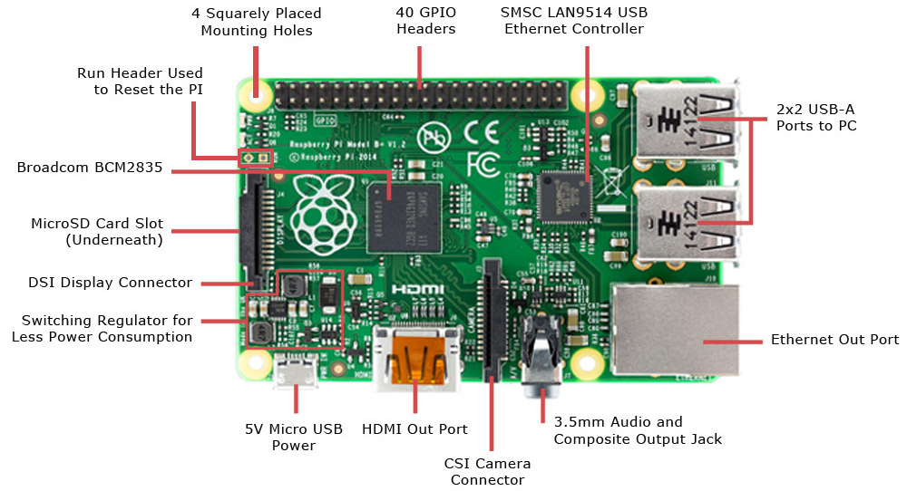

Your Open Source LEGACY
Table of Contents
Free Software
"To use free software is to make a political and ethical choice asserting the right to learn, and share what we learn with others. Free software has become the foundation of a learning society where we share our knowledge in a way that others can build upon and enjoy." - Free Software Foundation
Free as in Beer
Free of charge, but may be incomplete or come with strings attached.
Free as in Speech
Freedom to run, copy, distribute, study, change, and improve.
Open Source
Providing not just the end product, but many of the steps along the way.
The Linux Operating System
- Created by Linus Torvalds in 1991
- Completely open source and freely available
- Behind Android, Chromebook, Google/Amazon/Facebook/Microsoft/Apple servers
Truly Free Software
- Installed from an app "store"
- No cost, no ads, no subscriptions
- Used by hobbyists and professionals
Truly Free System
- No made-up restrictions about what you can install
- No fees for writing/distributing your own software
- Legal ways around "digital rights management" (DRM)
youtube-dlfor downloading YouTube videos/songsHandbrakefor ripping DVDs that you ownrecordMyDesktopfor recording what's showing on your screenpavucontrol+ Audacity for recording what's playing through your speakers
The Raspberry Pi
- Single Board Computer (SBC)
- About $35 w/o memory card, power supply, etc.
- 17 different models/versions
You have a Raspberry Pi 3 Model B+

Hardware
- About the computing power of a 3-4 year old phone
- Only 1GB of RAM is bad for desktop use
Specs
- Quad-core 1.4 Ghz CPU
- 1 GB of RAM
- Power from USB micro
- 32 GB storage (SD card)
- HDMI out to TV/monitor
- WiFi (internet) and Bluetooth (phone)
- 2 USB ports (keyboard/mouse/gamepad)
- Network port (ethernet)
- Headphone port
- Display/camera connectors
General Purpose Input/Ouput (GPIO)
- Lets you connect basic electronics directly to a computer
- Lights, sensors, motors
- Use standard programming languages (Python, Javascript, etc.)
Things a Pi Can Do
Typical Stuff
- Browse the internet (Chromium)
- Play videos/music (VLC)
- Edit documents, spreadsheets, etc. (LibreOffice)
Digital Art
- Create and edit music/video (Audacity, MuseScore, Pitivi)
- Create and edit images/animations (Gimp, Inkscape, Synfig)
- Capture audio/video (Audacity, recordMyDesktop)
- Connect to musical instruments (MIDI/USB)
Electronics
- Control lights, robots, machinery
- Record temperature, humidity, motion
- Record video/audio (Pi Camera, Microphone)
Server
- Home automation (Home Assistant)
- Home theater (Kodi)
- Personal web site (Apache)
- Ad-blocking (PiHole)
Fun Stuff
- Play free games (MineCraft, SuperTux, TuxCart)
- Emulate retro game systems (NES, SNES, Genesis, PS1, N64)

Raspbian
Linux operating system version (distribution) made for the Raspberry Pi. Inlcudes a bunch of (ad-free, fully functional) apps.

Logging In
Your Raspberry Pi should log in automatically when it boots. If you need it, your user name is pi and your password is raspberry
File System
Linux does not have "drives" like Windows. Everything starts at the root (a forward slash: /) and goes down into different directories (folders).
- Your files should go in
/home/pibecause your user name ispi - When you plug in a phone or USB drive, it will show up under
/media - You should not edit/delete files outside of
/home/piunless you're sure what you're doing

Terminal
You can interact with your Raspberry Pi directly with text commands. Type a command and press ENTER to execute it.
- The terminal always has a "current" directory (
/home/piby default) - Use
cd <NAME>to change to directory<NAME> - Put quotes (
") around anything with spaces

Add/Remove Software
Thousands of software packages are available for free (no ads, etc.) from the internet. Go to Preferences -> Add/Remove Software.
Gimp
Similar to Adobe Photoshop. Pixel-based image editor with layers and effects.

Concepts
Pixels
- Grid of color cells, all the same size
- More pixels = more detail (higher resolution)
Transparency (Opacity/Alpha)
- RGB + Alpha = RGBA
- Use Layer -> Transparency -> Add Alpha Channel
- Use Delete key or eraser tool
Layers
- Drawn from top to bottom
- Upper layers hide lower layers, except transparent regions
- Opacity = Transparency
- Try different Modes with more than one layer
Saving vs. Exporting
- Save uses Gimp format with layers, etc. for editing later
- Export makes a PNG or JPEG for sharing
Screenshots
- File -> Create -> Screenshot
Inkscape
Similar to Adobe Illustrator. Vector-based image editor with layers and shapes.


Concepts
Vector Graphics (SVG)
- Describes geometric shapes, not a pixel grid
- Can be scaled to arbitrary sizes without pixelation
- Path = points connected by (maybe curvy) lines
Layers and Groups
- Layers are drawn from top to bottom
- Upper layers hide lower layers, except empty regions
- Shape groups move and change colors together
- Use Object -> Group and Object -> Ungroup
Dots Per Inch (DPI)
- Resolution (size) of exported pixel grid image
- Higher = better picture, bigger file
Icons
- There are a bunch of SVG files in
/home/pi/Picturesyou can use - There are also SVG files in
/usr/share/icons
MuseScore
Similar to Finale. Music score editor for MIDI files.
- Sample songs (MIDI) are in
/home/pi/Music - Handbook is available in
/home/pi/Documents


Concepts
Notes and Sound
- Middle "A" = 440 Hz
- Notes are labeled A-G, with sharps (♯) and flats (♭)
- Higher notes (up on staff, right on keyboard) are higher pitched
- Note fill and stem determine duration
Exporting to WAV
- File -> Export and choose Wave Audio
- Play with VLC
- Edit with Audacity
- Import into Pitivi
Audacity
Edit audio (WAV) files with tracks and effects.

Concepts
Sound Waves
- All sound is air bumping into air, bumping into ears
- Frequency = pitch
- Amplitude = volume
Stereo vs. Mono
- Stereo = different sounds per ear
- Mono = same sound in both ears
Tracks
- Layers of sound over time
- Combined tracks = final song/sample/etc.
VLC
Plays and converts audio and video files.

Concepts
File Formats
- Movie = video track + audio track(s) + subtitle track(s)
- Song = audio track(s) + lyric track(s)
- Use Media -> Convert/Save to change format or extract audio/video
Synfig Studio
Create 2-D animations with layers and keyframes.

Concepts
Keyframes
- Critical moments in an animation
- Blending occurs between keyframes
Joints and Skeletal Models
- Models can have "bones" to constrain movement
- Makes animating easier
Rendering
- Creates a video that can be shared
- Does not include source
Pitivi
Create videos from media clips with tracks and effects.


Concepts
Video and Audio Tracks
- Combination of image and audio layers
- Final video will have everything combined
Video/Audio Effects
- Uses keyframes to change brightness, volume, etc.
- More effects = slower
Rendering
- Creates a video that can be shared
- Does not include source
WS2801 RGB LED Strip
- 32 Red/Green/Blue (RGB) Light Emitting Diodes (LEDs)
- All LEDs can be controlled independently
- Connects directly to Pi

Connecting the Hardware
- Make sure the LED strip and power supply are unplugged
- Attach the LED strip (male connector) to the Pi and 12-volt adapter
- Connect the 12-volt power supply to the 12-volt adapter
- Connect the 12-volt power supply to the wall
Testing the Software
- Use the
led-onandled-offtest programs from a Terminal
led-on red 0.5 white 0.5 blue 0.5 black
- You can make loops in the program by starting a name with a color (:) and ending it with a period (.)
led-on loop: green 0.25 red 0.25 loop. 10*loop blue
- Color samples can also be played back (recorded with Game LEDs program)
led-on sample /home/pi/Legacy/rainbow_sample.png
Logitech F310 Gamepad
- 10 buttons, d-pad
- Dual analog sticks
- Dual analog triggers
- No force feedback
- USB connection
LED Strip Gamepad Test
- Lets you manipuate the LED strip colors with your gamepad
- Teaches how computers make colors from red, green, and blue
- Can record and playback "movies"
Basic Colors
- Press and release


 to show green, red, blue, and orange
to show green, red, blue, and orange - Press + to see green + red
- Hold (orange), then hold (Alt) and press (red) to see orange - red (minus)
- Hold (green) and move
 left/right to change brightness and up/down to change hue
left/right to change brightness and up/down to change hue
Copying Colors
- Hold (blue) and press the (Copy)
- Let go of and blue is now in "memory"
- Press (red) to see blue + red
- Hold
 (black) button and press (Copy)
(black) button and press (Copy) - LED strip is back to off (black)
Patterns and Gradients
- Hold on d-pad to see rainbow colors
- While holding , move
 to change red (left/right) and blue (up/down)
to change red (left/right) and blue (up/down) - Hold button (Gradient) and press (green) to see a green gradient
- Hold
 or or on d-pad and a color to only set the first LED, even LEDs, or odd LEDs
or or on d-pad and a color to only set the first LED, even LEDs, or odd LEDs
Animations
- Hold on d-pad (Rainbow) and press (Copy)
- Hold
 or to cycle the colors
or to cycle the colors - Hold (black) button and press (Copy) to reset
- Hold , then hold (red), and then press (Copy)
- Hold or to move single LED around the strip
Recording and Playback
- Press to start recording
- Change LED colors however you want
- Press to stop recording
- Click File -> Save in the menu to save the "movie" as an image
- Click File -> Open in the menu to open an image and play it back
Sonic Pi
Create music tracks with samples, loops, and code.

Concepts
Music as a Program
- Play notes by name using a synthesizer
- You must specify delays (in seconds) between each note
- No delay means to play things at the same time (e.g., a chord)
# Mary had a little lamb with_synth :piano do play :E sleep 0.25 # Wait 1/4 second play :D sleep 0.25 play :C sleep 0.25 play :D sleep 0.25 play :E sleep 0.25 play :E sleep 0.25 play :E sleep 0.5 # Wait 1/2 second play :D sleep 0.25 play :D sleep 0.25 play :D sleep 0.5 play :E sleep 0.25 play :G sleep 0.25 play :G sleep 0.5 end
Loops and Threading
- The
live_loopcreates a new "thread" that independently repeats forever - You must provide a name for the loop
- Use
syncto wait for a cue andcueto tell everyone waiting to go ahead (once)
# Mary had a little lamb remix live_loop :loop1 do with_synth :piano do play :E sleep 0.25 # Wait 1/4 second play :D sleep 0.25 play :C sleep 0.25 play :D sleep 0.25 play :E sleep 0.25 play :E sleep 0.25 play :E sleep 0.5 # Wait 1/2 second play :D sleep 0.25 play :D sleep 0.25 play :D sleep 0.5 play :E sleep 0.25 play :G sleep 0.25 play :G sleep 0.5 end # Cue the other loop to go ahead (once) cue :other_loop end # Starts at the same time as :loop1 live_loop :loop2 do # Wait for cue sync :other_loop with_synth :fm do play :E sleep 1 # Wait 1 second play :C sleep 1 play :D sleep 1 play :G sleep 1 end end
Samples and Effects
- Use
sampleto play a pre-recorded sound - Give a WAV file path to
sampleinstead of a name to use your own samples (like'/home/pi/Music/pbsounds/sneeze.mp3.wav') - Use
with_fxto apply an audio effect to the code insidedo…end - Check the Help for all of the available effects and their parameters
live_loop :sample_fx do # Play a cowbell sound 4 times in a row 4.times do sample :drum_cowbell # Wait half a second sleep 0.5 end # Play a reverb+echo cowbell sound 4 times in a row 4.times do with_fx :reverb, room:1 do with_fx :echo, mix: 0.3, phase: 0.5 do sample :drum_cowbell # Wait half a second sleep 0.5 end end end end
LEDs and Gamepad (LEGACY)
- You must
requirethe LEGACY library in your code - Enable LED strip with
use_leds - Enable Gamepad with
use_gamepad - Basic color names work (
red,green, etc.) - Try
rainbowpattern andspinneranimation - Use
color_sampleto load recording from Game LEDs program - Add custom code to
use_gamepadto handle buttons (:a,:b,:x,:y,:lb,:rb,:back,:start,:logitech,:lstick,:rstick)
# Load the LEGACY library require '/home/pi/Legacy/legacy.rb' # Enable LED strip use_leds # Set color immediately black time: 0 # Blending basic colors (default: 1 second) red sleep 1 orange sleep 1 yellow sleep 1 green sleep 1 blue sleep 1 indigo sleep 1 violet sleep 1 pink sleep 1 white sleep 1 # Enable gamepad and handle button presses. # Button names: :a, :b, :x, :y, :lb, :rb, :back, :start, :logitech, :lstick, :rstick use_gamepad do |button| case button when :a cue :button_a when :b cue :button_b end end puts "Press the A button to continue" sync :button_a # Patterns/animation rainbow sleep 1 spinner time: 5 sleep 5 # Define a custom pattern def flag(time: 1) # Must have exactly 32 colors, one for each LED top to bottom colors = [ :blue, :white, :blue, :white, :blue, :white, :blue, :white, :blue, :blue, :red, :red, :white, :white, :red, :red, :white, :white, :red, :red, :white, :white, :red, :red, :white, :white, :red, :red, :white, :white, :red, :red ] blend colors, time: time end puts "Press the B button to continue" sync :button_b flag sleep 1 puts "Press the A button to continue" sync :button_a # Load a color sample (recorded with Game LEDs program) color_sample '/home/pi/Legacy/flag_sample.png', time: 5 sleep 8 # Disables LED strip and gamepad stop_legacy
Making Your Own Movie
- Create images in Gimp or Inkscape
- Create music in MuseScore or Sonic Pi
- Use Synfig or Pitivi to create a movie